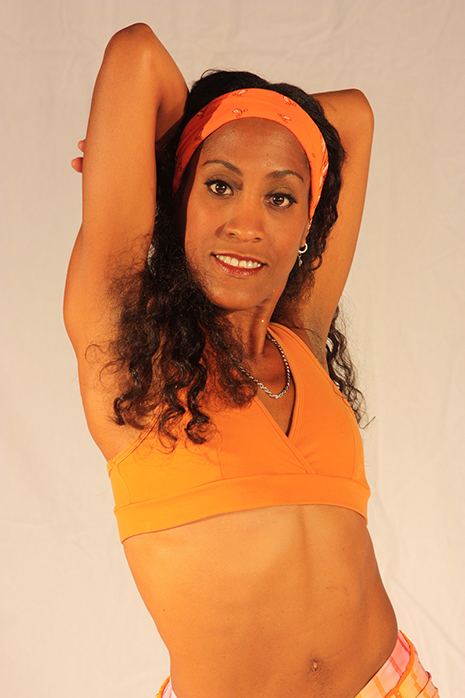

The information on this website will focus on the experience of Afro-Latinos in the United States.
Afro-Latinos in the United States are in an interesting position because even though they are Latino, many people view them as African Americans.
We will discover what an Afro-Latino is, the history of slavery in the Americas, the difference between race and ethnicity and facts and figures of Latinos in the United States. A documentary on this website will showcase three Afro-Latinos living in Miami and how they are dealing with their racial and ethnic identity.
Participants in My Documentary
Below are pictures with a short bio of the Afro-Latinos I interviewed in my documentary.
Sonia
(Courtesy: Diego Perez)Sonia Baez-Hernandez is Afro-Puerto Rican and lives in Miami, FL. Her hometown is Bayamon, Puerto Rico. She is an interdisciplinary artist and does painting, installation art, poetry and other types of art.
Marisol

(Courtesy: Marisol Blanco)Marisol Blanco is Afro-Cuban and lives in Miami, FL. Her hometown is Havana, Cuba. She teaches Afro-Cuban Folkloric and Popular dance for children and adults at different dance studios in Miami. She is happy to know that her dance students are learning about her Cuban culture.
Augusto
(Courtesy: Morgan Manning)Augusto Soledade is Afro-Brazilian and lives in Miami, FL. His hometown is Salvador, Bahia in Brazil. He is the Artistic Director of the Augusto Soledade Brazzdance dance company, which is located in Miami, FL.